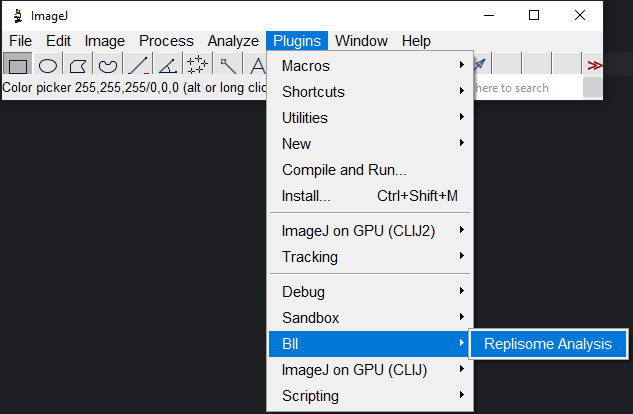
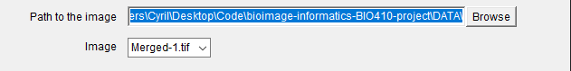
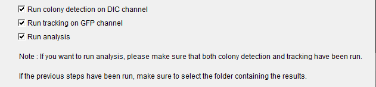
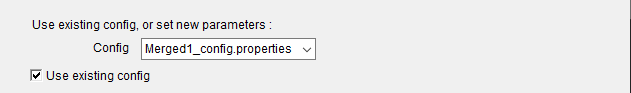
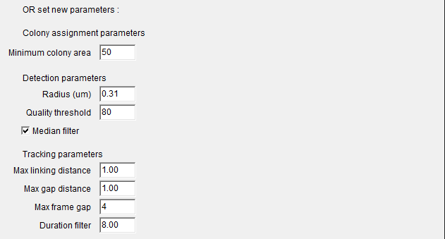
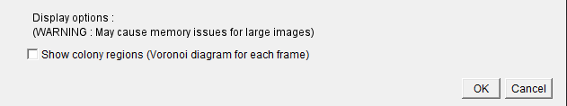

Plugin usage
This page provides information on how to use the Replisome Analysis plugin
Here you will find information about running the plugin, available parameters and display options.
Launching the plugin
To launch the plugin, open ImageJ and navigate to the Plugins menu.
The plugin will be listed under BII > Replisome Analysis.

Choosing an image
Specify the path to the folder containing the images you wish to analyze, then select the image you wish to analyze.

Choosing what to run
The plugin provides two distinct but related components, Colony Detection and Replisome Tracking.
- Colony detection : each bacteria in the DIC channel is assigned to a colony. Labels are also filtered to remove small outliers.
- Replisome tracking : the replisomes in the GFP channel are tracked over time, using TrackMate.
- Analysis : Tracks and colonies features will be used to generate statistics and plots.
The results from these components can then be used to run the Analysis section.
You can run both or only one of these workflows by checking the boxes in the Run section.

Note
Running the Analysis section requires that both tracking and colony detection have been run previously. The results folder is checked for the presence of the necessary files, and the analysis will not run if they are not found.
Configuration
Using an existing configuration
For default images, some configurations are already available, these will be used if you check the relevant box.
You may then select one of these configurations from the dropdown menu. If no valid configuration is available, the plugin will use the values specified in the interface, and "None" will be displayed in the menu.

Warning
KNOWN ISSUE The configuration files are stored in the resources of the jar file.
The automated loading may sometimes fail, in which case you will need to specify the configuration manually.
The plugin uses a backup strategy that copies the necessary files to the Downloads folder, but if this fails, you may find the parameters for the project images on GitHub.
Default configurations are available for :
- Merged-1.tif
- Merged-2.tif
- Merged-3.tif
Specifying a new configuration
If you wish to specify your own configuration, or no configuration is available, simply uncheck the box and fill in the fields as required.

Note
If no valid configuration is available, the plugin will always use the values specified in the interface.
Colony detection
The plugin uses classical image processing techniques to detect the bacteria and assign them to colonies; the analysis is GPU-accelerated using clij2.
- Minimum colony area : The minimum area of a colony in pixels. All colonies with an area below this value will be discarded.
Tracking replisomes
This plugin uses TrackMate as a backend for tracking the replisomes.
Here, we use a Laplacian of Gaussian (LoG) detector to detect the spots in the GFP channel, and a sparse LAP to link the spots over time.
See this page for more information on the LAP tracker.
- Radius : the mean radius of the replisome in microns. Used by TrackMate to detect spots.
- Quality threshold : the minimum quality of the spots. Spots with a quality below this threshold will be discarded; this measure is based on the brightness of the spot, as well as the correspondence of its size to the chosen radius. For more information, see here.
- Median filter : whether to apply a median filter to the image before tracking the replisomes. This will help remove noise from the image.
- Max linking distance : the maximum distance in microns that a spot can move between frames.
- Max gap distance : the maximum gap in microns for merging two tracks. This will join two tracks if the distance between the end of one track and the start of the next is less than this value.
- Max frame gap : the maximum number of frames that can be skipped when linking two tracks.
- Duration filter : the minimum duration of a track in frames. Any track shorter than this will be discarded.
For complete in-depth information on the parameters, see the TrackMate manual.
Display options
You can choose to display additional results

Warning
Showing some additional results will increase the memory footprint of the plugin. You may wish to run components separately if you are running out of memory. This is less of a concern for plots.
- Show colony regions : the Voronoi diagram used to assign spots to colonies will be displayed.
- Show all plots : all available plots will be displayed. Otherwise, only the colony area per track over time and the features jointplot.
 Example of the Voronoi diagram used for colony detection (animated over time)
Example of the Voronoi diagram used for colony detection (animated over time)
Running the plugin
Once you have selected the images and configurations you wish to use, click OK to run the plugin.
To close the plugin without running it, click Cancel.
Expected output
Warning
The results will be overwritten if you run the plugin multiple times with the same image.
The results will be structured as follows, assuming the DATA/ folder is provided as input :
DATA
├── Merged-1.tif
├── ...
└── results
├── Merged-1_colony_labels.tif
├── (Merged-1_voronoi_diagram.tif) # if selected
├── tracks_Merged-1.csv
├── spots_Merged-1.csv
└── ...
Note
A results/ folder will be created no matter which components you run, inside the folder containing the images you provided.
Colony detection
Once colony detection is finished, colony labels will be shown in ImageJ.
They will also be saved as {ImageName}_colony_labels.tif in the results folder. If you have selected to display the colony regions, the Voronoi diagram will also be shown and saved as {ImageName}_voronoi_diagram.tif.
Note
The colony labels are saved as instance labels, where each colony is assigned a unique label (number) and the background is 0.
Tracking
Once the tracking has run, tracks will be shown on the image in ImageJ.
They will also be saved as csv files in the results folder, one for spots and one for tracks. The files would be called spots_{ImageName}.csv and tracks_{ImageName}.csv.
The CSV rows contain the tracks, and the columns several features of the tracks.
Analysis
The analysis can be run as long as any of the previous components have been run at least once for the chosen image. This means you can either run all components at once, or run them separately and then run the analysis.
The shown plots include :
- Colony area over time per track : the area of the colony over time, for each track.
- Track duration : the duration of each track.
- Track displacement : the displacement of each track.
- Track mean speed : the mean speed of each track.
- Track total distance : the total distance travelled by each track.
- Track confinement ratio : the confinement ratio of each track, defined as net distance over total distance travelled.
- Track mean directional change rate : the mean directional change rate of each track.
- Joint plot : a joint plot of all track features, including histograms and scatter plots.
You may find more information on the features on the TrackMate website.
These will be saved in the results/plots/ folder as .png files, and shown in ImageJ.